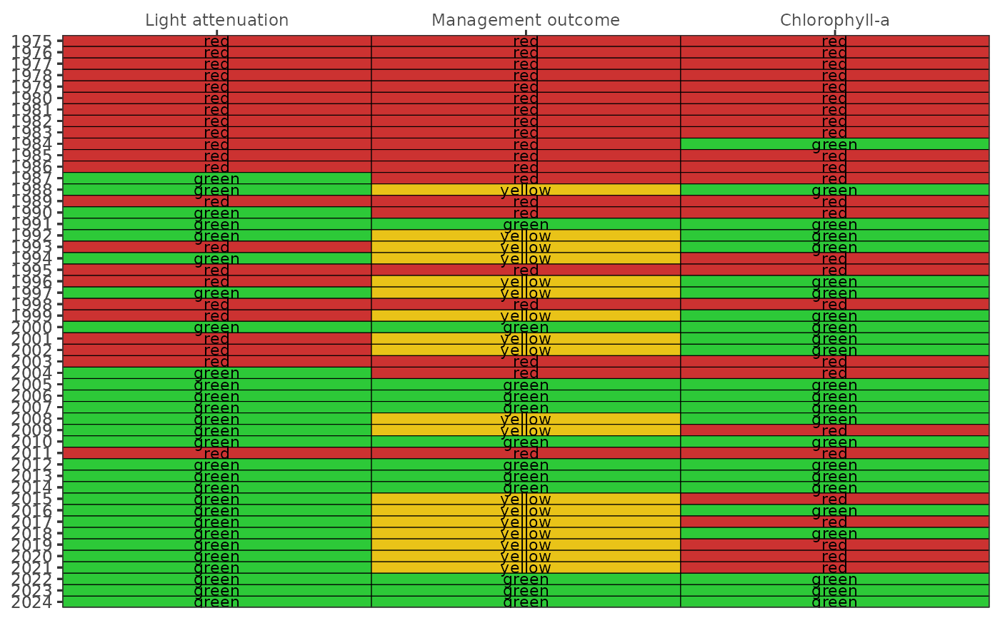

R/show_segmatrix.R
show_segmatrix.RdCreate a colorized table for water quality outcomes by segment that includes the management action and chlorophyll, and light attenuation exceedances
data frame of epc data returned by read_importwq
numeric for size of text in the plot, applies only if tab = FALSE
optional data.frame for annual bay segment water quality targets, defaults to targets
numeric vector indicating min, max years to include
chr string for bay segments to include, only one of "OTB", "HB", "MTB", "LTB"
logical indicating if text labels in the plot are abbreviated as the first letter
optional chr string indicating font family for text labels
logical if historic data are used from 2005 and earlier
logical if matrix is created using plotly
logical indicating if incomplete annual data for the most recent year are approximated by five year monthly averages for each parameter
numeric for width of the plot in pixels, only applies of plotly = TRUE
numeric for height of the plot in pixels, only applies of plotly = TRUE
A static ggplot object is returned
This function provides a combined output for the show_wqmatrix and show_matrix functions. Only one bay segment can be plotted for each function call.
show_segmatrix(epcdata, bay_segment = 'OTB')
